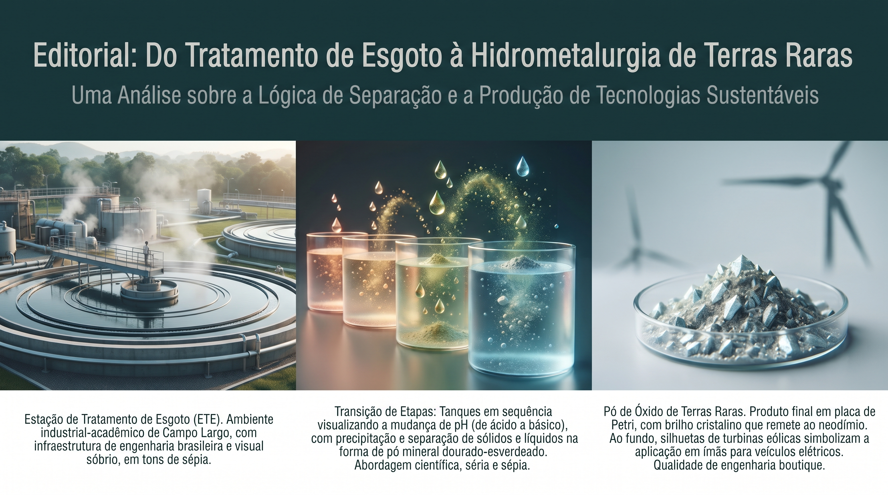

Do decantador ao neodímio: por que a lógica do esgoto explica o refino de terras raras
O celular que reluz na mão, o vento que gira a torre,
o carro elétrico no portão — de onde vem o ímã que corre?
Vem de terra rara e fina, separada aos poucos, sem pressa,
do mesmo jeito que se ensina lá na estação que despeja e represa.
Decantar, tratar, filtrar — é a lógica que não muda:
do esgoto ao lantanídeo, a engenharia é a mesma ajuda.
Uma estação de tratamento de efluentes e uma planta de refino de terras raras resolvem o mesmo problema com o mesmo verbo: separar. Uma tira sujeira da água; a outra tira um metal específico de uma solução cheia de metais parecidos. A diferença não está na lógica — está na paciência do controle de pH.
- A metáfora: saneamento e hidrometalurgia usam a mesma engenharia de separação sólido-líquido, apenas com objetivos diferentes.
- A virada: ao invés de decantar sujeira, a cascata de pH precipita um metal por vez, do menos ao mais solúvel.
- Por que importa no Brasil: reduzir CAPEX ao reaproveitar lógica já validada em saneamento pode viabilizar jazidas hoje marginais.
- O produto: o Minerador 4.0 é um simulador local para treinar essa cabeça, sem prometer lucro garantido.
1. De onde vem o ímã?
O celular vibra no bolso, a pá eólica gira no horizonte, o carro elétrico acelera em silêncio no semáforo. Três cenas comuns do cotidiano de 2027 têm uma coisa em comum: dependem de um punhado de elementos com nomes difíceis de pronunciar — neodímio, disprósio, praseodímio — que compõem os ímãs permanentes e os componentes eletrônicos por trás dessa modernidade discreta.
Poucas pessoas param para perguntar de onde vem esse metal. A resposta começa numa jazida de monazita ou bastnäsita, mas termina numa etapa pouco glamorosa: separar, com precisão química, um lantanídeo do outro numa solução onde todos se parecem quimicamente. É aí que a história encontra um lugar improvável para uma metáfora: a estação de tratamento de esgoto do bairro.
2. Uma cena de ETE: decantar, flocular, limpar
Uma estação de tratamento de efluentes não faz mágica. Ela faz física e química básicas, repetidas com disciplina: a água suja entra, partículas em suspensão recebem um floculante que as agrupa em flocos maiores, esses flocos decantam por gravidade num tanque, e a água mais limpa segue para o próximo estágio. Cada etapa remove um pouco mais de sujeira, até a água sair em condição de ser devolvida ao rio ou reutilizada.
Não existe um único tanque milagroso que resolve tudo de uma vez. Existe uma sequência de estágios, cada um ajustado para separar o que aquele estágio específico consegue separar melhor. É lento, é metódico, e funciona há décadas em praticamente toda cidade do mundo.
A cena repetida
Entra sujeira misturada. Estágio a estágio, algo se separa e decanta.
No fim, sobra o que interessa — água limpa de um lado, lodo do outro.
3. A virada: a mesma cascata, agora para precipitar lantanídeos
Troque "água suja" por "solução ácida rica em lantanídeos dissolvidos" e troque "sujeira" por "íons metálicos". A lógica não muda: em cada estágio, ajusta-se o pH da solução, e cada metal tem uma constante de solubilidade (Kps) diferente. Em determinado pH, um metal específico deixa de ficar dissolvido e precipita como hidróxido sólido — exatamente como o floco que decanta no tanque da ETE.
A diferença prática é que, no saneamento, o objetivo é separar "tudo que é sólido" de "tudo que é líquido". Na hidrometalurgia de terras raras, o objetivo é separar "este metal específico" dos "metais quimicamente parecidos" que estão na mesma solução — porque neodímio, praseodímio e disprósio têm Kps muito próximos entre si. Por isso a cascata de terras raras costuma precisar de mais estágios, cada um ajustando o pH com mais rigor do que uma ETE convencional exigiria.
É a mesma arquitetura de processo — cascata, controle de variável, separação estágio a estágio — aplicada a um problema de seletividade mais fino. Quem já operou ou estudou uma ETE tem, sem saber, metade do vocabulário mental necessário para entender uma planta de refino seletivo.
4. Por que isso importa no Brasil
O Brasil tem reservas relevantes de terras raras, mas hegemonia de mercado hoje pertence a quem domina a separação em escala industrial, não a quem tem mais minério no subsolo. O gargalo não é geológico — é de engenharia de processo e de custo. Construir uma planta de refino do zero, com tecnologia proprietária estrangeira, costuma exigir CAPEX incompatível com jazidas de porte médio.
Reaproveitar lógica de processo já validada e amplamente disponível — como a de decantação e floculação usada em saneamento — pode reduzir esse CAPEX, porque parte do conhecimento de engenharia (tanques, bombeamento, controle de pH, dimensionamento) já existe, é ensinado e é operado localmente. Isso não elimina o desafio químico da seletividade, mas retira parte do custo de "reinventar a planta".
Há também uma dimensão de formação. Em Campo Largo (PR), essa combinação entre saneamento e hidrometalurgia é tratada como conteúdo de ensino aplicado: uma forma de levar engenharia de processo real, com equações e planilhas, para quem vai operar ou avaliar esse tipo de planta no futuro — sem depender de consultoria importada para o primeiro entendimento.
| Na ETE | Na hidrometalurgia de terras raras |
|---|---|
| Floculante agrupa partículas em suspensão. | pH controlado precipita um metal específico. |
| Decantação separa sólido de líquido por gravidade. | Precipitado é separado da solução em cada estágio. |
| Vários tanques em série tratam a água aos poucos. | Cascata de estágios isola um lantanídeo por vez. |
| Objetivo: água limpa o suficiente para devolver ao rio. | Objetivo: metal puro o suficiente para virar produto. |
5. O produto: um simulador local para treinar a cabeça
É nesse ponto que entra o Minerador 4.0. Ele não promete descobrir uma mina, nem garante lucro em nenhuma jazida específica. O que ele faz é permitir que alguém monte, em software, a mesma cascata de pH descrita aqui — com balanço de massa, constantes de solubilidade e uma estimativa de CAPEX/OPEX — e veja os números antes de gastar um real em planta real.
É um simulador para treinar raciocínio de processo, não uma promessa de retorno financeiro. Se o cenário simulado não fecha economicamente, o simulador diz isso com a mesma honestidade com que diria que fecha. A utilidade está em pensar a cascata antes de construí-la, não em prometer o que a química e o mercado ainda vão decidir.
6. O convite
Se a metáfora fez sentido até aqui — se a ideia de "a mesma cascata, outro metal" ficou clara — vale conhecer a versão HTML de degustação e o plano Free do Minerador 4.0 na loja ETE. Não é preciso ser engenheiro químico para entender a lógica; é preciso apenas ter visto, uma vez, como uma estação de tratamento separa o que precisa ser separado.
Dicionário de Termos Técnicos
Para facilitar a leitura, organizamos os conceitos utilizados no artigo:
- Hidrometalurgia: conjunto de processos químicos em meio aquoso (lixiviação, precipitação) usados para extrair e purificar metais.
- Lantanídeos: família de elementos químicos conhecidos como terras raras, quimicamente muito parecidos entre si.
- Floculação: processo que agrupa partículas pequenas em flocos maiores para facilitar a decantação.
- Decantação: separação de sólido e líquido por gravidade, deixando o sólido se depositar no fundo.
- Kps (produto de solubilidade): constante química que indica em que concentração/pH um composto precipita numa solução.
- Cascata de pH: sequência de estágios em que o pH é ajustado progressivamente para separar metais diferentes, um a um.
- CAPEX/OPEX: investimento inicial (capital expenditure) e custo operacional recorrente (operational expenditure) de uma planta.
Hashtags
Contato
- Simulador Minerador 4.0: ete.caracore.com.br
- E-mail: suporte@caracore.com.br
- Site Institucional: www.caracore.com.br
- LinkedIn: Cara Core Informática
Experimente a degustação HTML e o plano Free do Minerador 4.0 e monte sua própria cascata de precipitação.
Conhecer o Minerador 4.0
Artigo publicado em 10 de junho de 2027
© 2027 Cara Core Informática. Todos os direitos reservados.